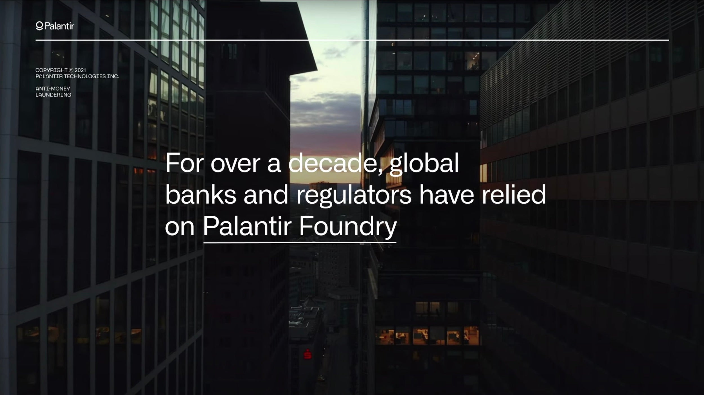

反洗钱
对抗未来的金融犯罪

一种方法，应对所有挑战
数字化转型加速了复杂攻击的蔓延，加之加密货币等不受监管的新型数字资产的出现，加剧了风险暴露，使得金融机构检测和防范金融犯罪的难度空前提升。 Palantir 的软件备受银行业巨头、新兴金融科技公司和监管机构的信赖，依托多层次安全机制与顶尖架构，提供可靠保障。
Palantir 解决方案涵盖：
交易监控
调查与金融情报部门
了解你的客户 (KYC)
客户与交易风险评级
制裁筛查
强化与客户尽职调查
反洗钱实践应用
01 用于反洗钱的 Foundry 帮助全球性金融组织将成本降低了 90%，并 将真阳性率提升了 45 倍
02 Our solution provides banks with the flexibility to deliver 70+ use cases on a single platform
03 
Foundry cuts investigative time in half while improving risk posture and relationships with the regulators
Foundry for AML
Financial institutions need to comprehensively understand the behavior of their customers, counterparties, and all related networks.
Foundry for AML is a regulator approved approach to improving your AML risk posture by deploying a next generation AI-based AML and compliance process within days.
What sets Palantir apart:
Powerful AI Foundation
Palantir’s machine learning-based entity resolution and advanced network-based risk models enable easy and accurate linking of customers, networks and unknown counterparties. This empowers the bank with a solid, future-proofed foundation, and a central client file — or “customer 360” — that can be updated dynamically across AML functions.
Holistic Risk-Based Models & Scenarios
Palantir's solution takes a hybrid approach, providing comprehensive out-of-the-box modules, scenarios and models, while offering the flexibility needed to meet regulatory demands driven by your precise customer-base and risk tolerance. Ultimately, this improves alert accuracy and efficiency while providing more high-quality, automated SARs and reports for regulators.
Government-Approved Security
Initially built for use by government intelligence and defense agencies, with privacy and civil liberties concerns at top of mind, Palantir Foundry includes unparalleled, granular security controls.
All data is encrypted both in transit and at rest, and Palantir offers high auditability and role-based access control frameworks so that all teams can access and share the necessary data without compromising security.
Best-in-Class Investigative Tooling & Reporting
With a holistic understanding across transaction, relationship, counterparty, KYC, and sanctions risk, analysts can quickly triage alerts and ask follow-up questions to disposition the full network of related entities. Built-in workflow management enables timely and proper escalation, triage, and review — with full collaboration and transparency across all relevant teams.
Once an investigation is complete, Palantir generates required reporting information with full data lineage to source systems, updates reports dynamically as information changes, and alerts analysts of new risks.
A Proven Solution
Commercial Off-the-Shelf Product
Palantir Foundry is the industry’s leading commercial data infrastructure, and provides the basis for the Next Generation Financial Crime Solution as a productized, out-of-the-box solution. It includes a stable, scalable back-end built for complex data environments.
Speed to Implementation
The proposed Solution can be rapidly implemented and will deliver a significant portion of the solution functionality out-of-the-box - meeting needs on an expedited timeline of weeks rather than years.
Foundation for Future Capabilities
Foundry provides a data foundation for continued digital transformation. As the world changes, the data infrastructure is designed to adapt and scale along with changing organizational needs.
Cost-Effectiveness
Foundry is a fully integrated SaaS solution, with high speed-to-value and multiple features for optimizing Total Cost of Ownership — even when deployed on-premises. By packaging a suite of versatile applications, organizations save on labor, maintenance, support and operational costs.
Openness & Interoperability
Foundry is an open, extensible, and scalable system. All data in Foundry can be securely exported in industry standard, open formats for use in other systems, and all of the logic used to integrate our clients’ data is available and usable in any environment.
Get more out of your data platforms with Palantir Foundry
Please see our Privacy Policy regarding how we will handle this information.